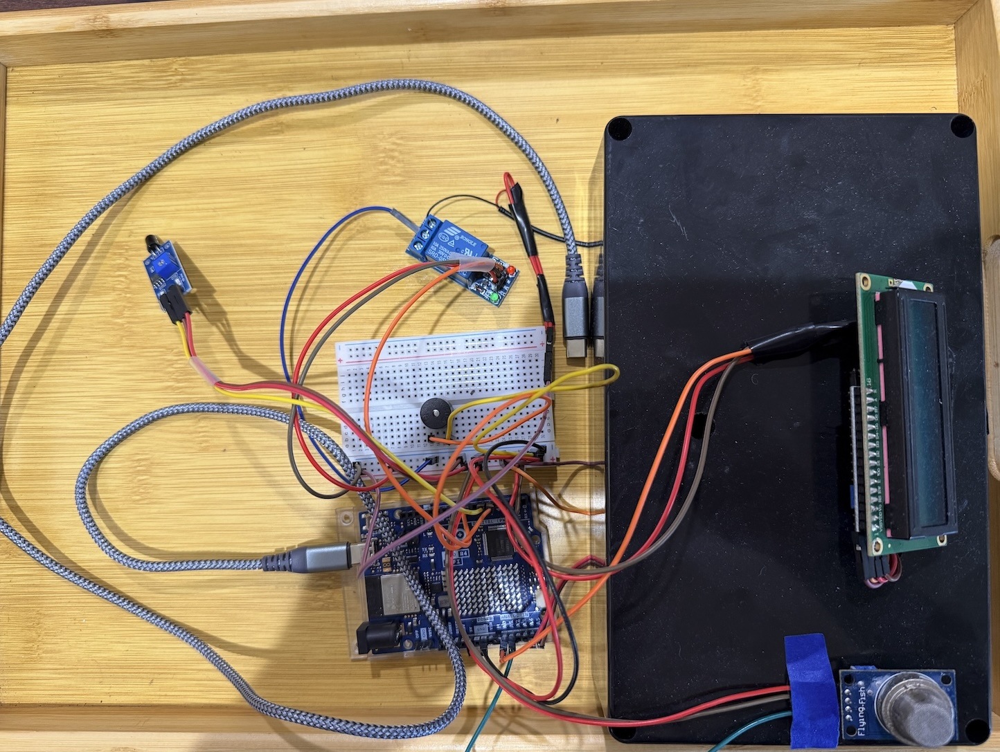

EmberSensor combines local sensing and cloud intelligence to produce a clearer, more actionable picture of wildfire risk.
These videos walk through how EmberSensor works and show each phase of the project in action.
A thermal camera detects fires automatically, and the system aims its spray nozzle at the flames to deliver targeted suppression.
Local sensors and cloud fire-risk analysis detect dangerous conditions and trigger the home sprinkler system.
Temperature, smoke, and flame-related signals are monitored near the home.
Live weather and nearby wildfire hotspot information are added to local sensor readings.
The platform computes a live fire risk score based on local and surrounding conditions.
When conditions become critical, the system can notify the user and trigger sprinkler response.

EmberSensor is designed to connect local environmental monitoring with broader regional fire awareness. Instead of looking at only one signal, the system combines multiple inputs to form a more complete view of danger.
This approach helps support earlier awareness, better decision-making, and more proactive protection around the home.